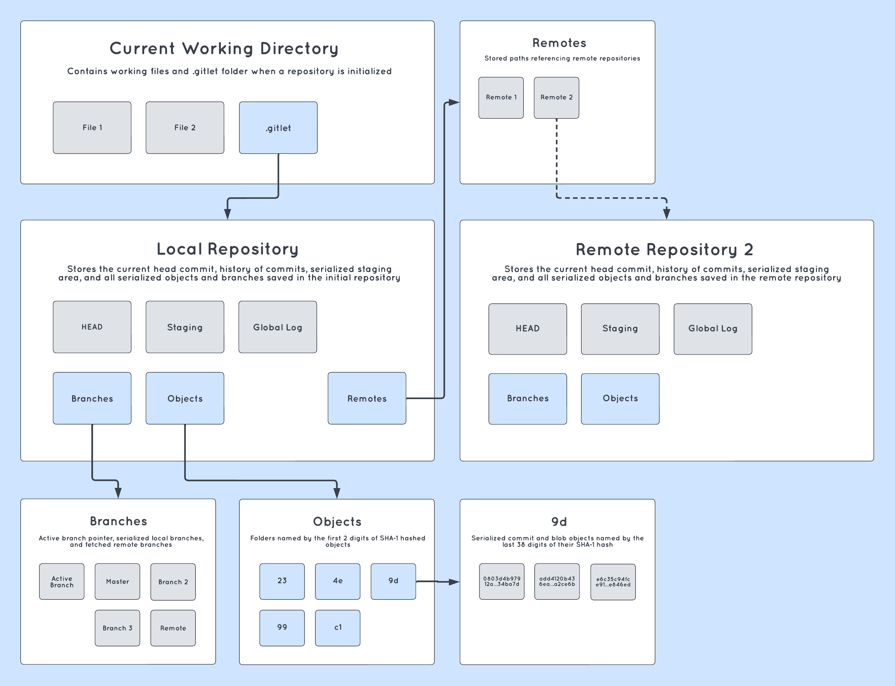
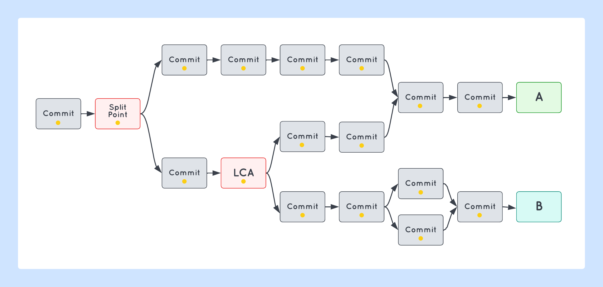

Making my local gym's slow and boring sign-up tool faster and slightly less boring
Project Inspiration
I've trained Brazilian jiu-jitsu for longer than I've been programming, and there's a lot I love about it. I
love the tactics and physicality of the sport, I love going to the gym and learning something new,
I love landing submissions, and I even love working my way out of some really bad spots. The people can be
alright too. One thing I don't love though, is the internal site everyone at my gym uses to sign up for
classes. Having a sign up tool is useful for instructors to keep track of things like availability and class
level, and it's great for students like me to commit to a schedule and keep track of my progress. That being
said, there are 2 big problems I have with the signup interface that I think could be solved.
KEY LEARNINGS
01
Building more complex web apps
02
Front-end design with React
03
AWS SDK (AppSync, Lambda, Cognito)
04
Data manipulation using DynamoDB
05
Useful JS libraries (Redux, Next.js)
Slow and Boring?
First, the actual interface is really slow. Besides the borderline psychotic page loading times, my big issue is
that the requests generated by signing up for a class take a while to process, sometimes upwards of
10 seconds. Furthermore, each time a button is pressed, the entire page is re-rendered. This is especially
troublesome when signing up on a mobile device, where a page refresh means I need to scroll through tens of
classes with hundreds of attendees before I reach the class I want at the bottom. I sign up for between 5-10
classes per week, so putting my name down for the week in advance can be a really annoying process.
Second, the site is kind of boring. Take the leaderboard, for example: just a few plain text lines are
allocated to the top performers, not to mention that performance metrics are never reset! Wouldn't it be nice
to show off that you've gone to more classes than anyone this month, including the guy you haven't seen once
this year but did 500 classes during the Bronze Age?
Leaderboard aside, I also wanted to bring in some additional features so that users gain more visibility into
their monthly progress, and admins have GUI-level control over users, attendees, and classes all in the same
application.
My Approach
Without a project skeleton, I planned ahead by diagramming how my
implementation of Gitlet should look. To figure out how Git stores
things like head commits, branches, and logs, I explored .git in my own
repositories and came up with a modified structure that looks like this:

All repository information (e.g. current head, staging area, blobs,
branches, commits, and remote repositories) is saved in a .gitlet
file. Commits and blobs are assigned a UUID using SHA-1, serialized,
and stored in the objects folder. To speed up object traversal,
objects are packaged in folders named by the first two digits of their
UUID, similar to Git.
Challenges
Project design: Planning Gitlet's design was not a straightforward
process. Methodically cycling between learning, planning, and coding
helped me locate design flaws, plan ahead, and continuously iterate
until my implementation aligned perfectly with the intended design.
Checkout, merge, and fetch: These commands involve altering the working
directory based on information pulled from commit histories. For
example, the command merge behaves differently based on the earliest
split point of the given branches. For these commands to work, I treated
commit histories as directed acyclic graphs so I could easily traverse
them in reverse level order. My implementation involved using hashmaps,
linked lists, and unordered sets to store and retrieve information
during traversals.

Example of LCA in the merge command: Gitlet finds the latest common
ancestor of two commits in O(n) time (where n represents the number of
parents of each branch head) by running DFS to find all parents of
commit A, then matching those commits with each parent of commit B.
Every shared commit is a split point, and the LCA is the split point
with the greatest depth. Gitlet avoids calculating node depths during
merge by memoizing depth each time a new commit is saved.
Testing and debugging: Gitlet was particularly challenging because each
command relies upon the proper functionality of the other commands (for
example, fetching a remote branch is impossible if the remote repository
is improperly initialized.) I unit tested rigorously to ensure that
early bugs did not permeate later code, and found myself spending as
much time writing tests as I did coding up the main content. My
poorly-written tests often led me astray; my well-written ones were
crucial for clarifying key invariables and managing complexity.
Takeaways
This was my first introduction to software design; instead of coding
to
meet a list of predefined requirements, I had to preemptively think
about designing in a way that is structured, well-organized, fast, and
flexible so I can develop new features without getting lost. I spent -
and wasted - a lot of time working and reworking both my design and
implementation, which helped me build a strong mental framework for
setting up larger, more complex projects.